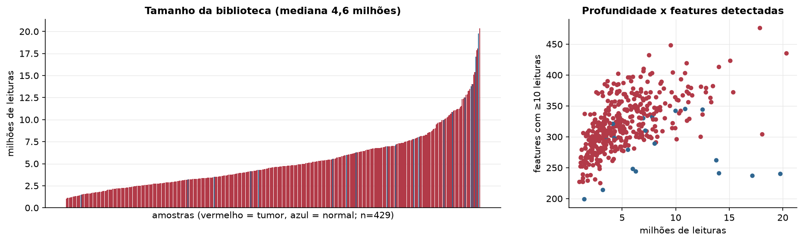
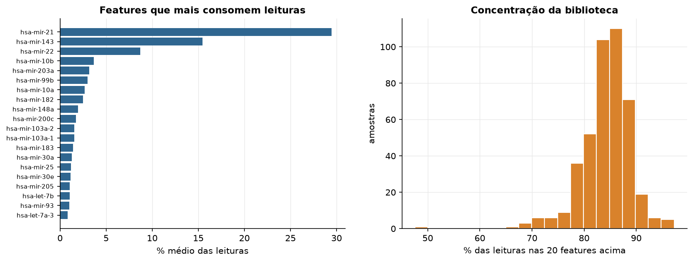
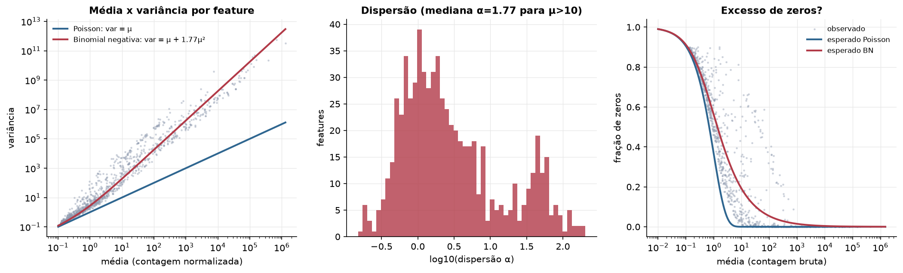
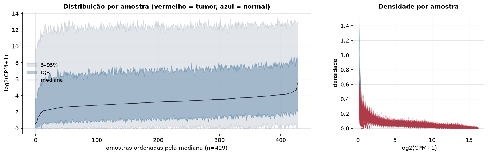
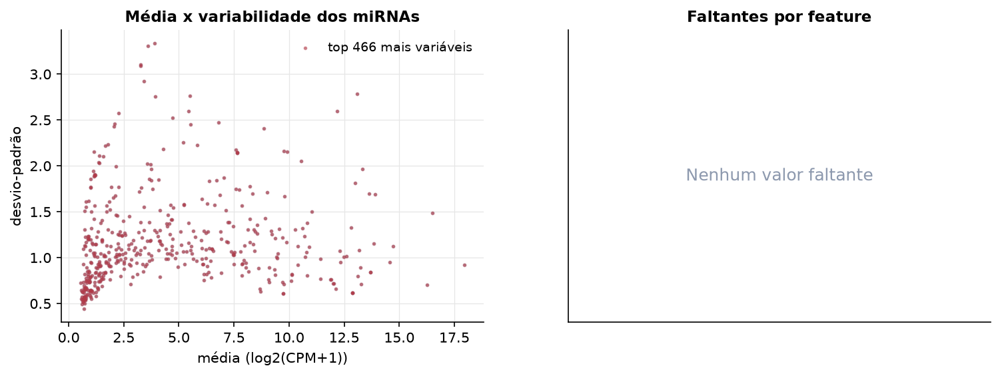
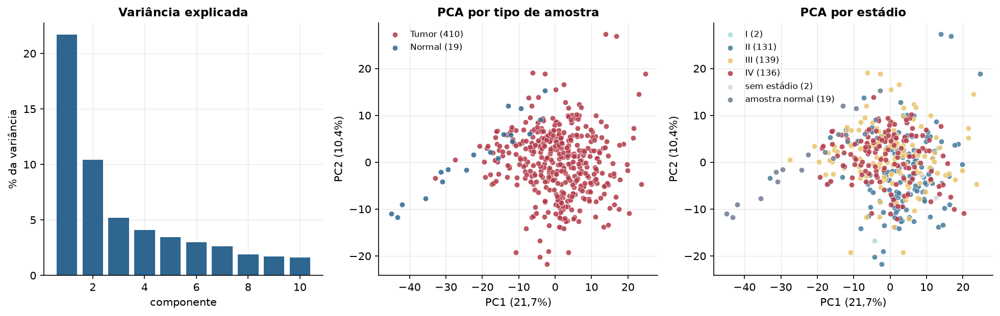
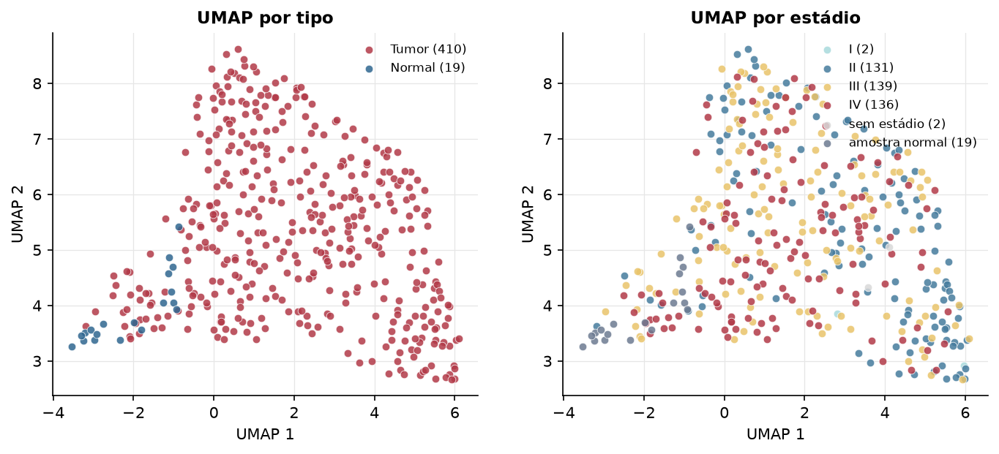
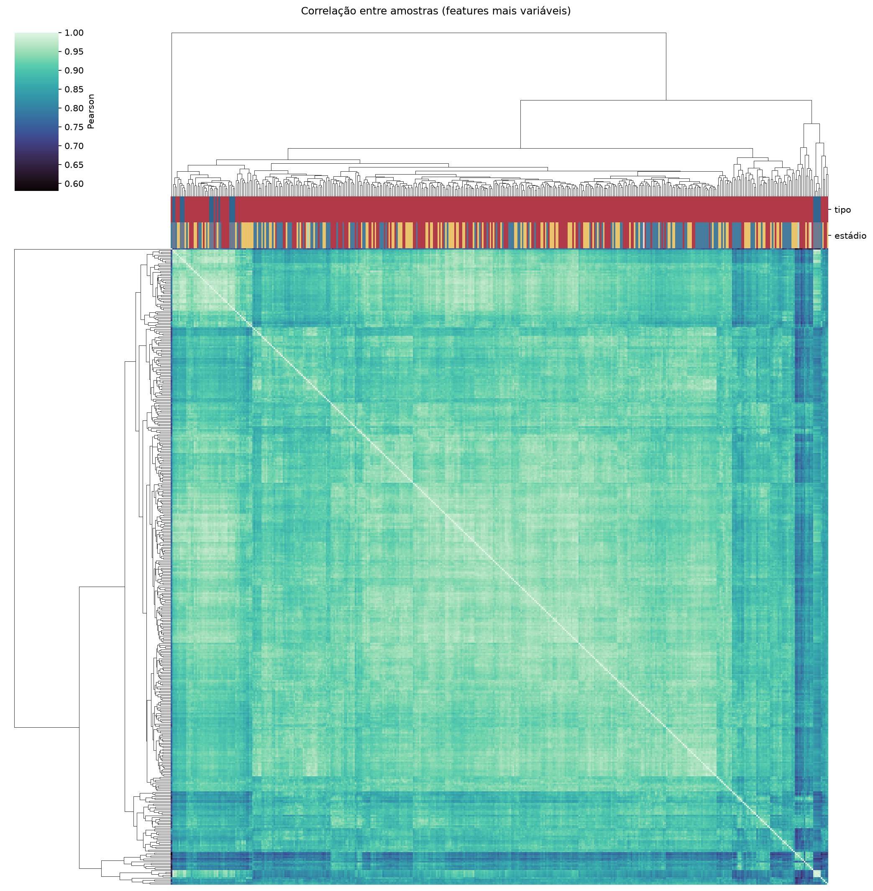
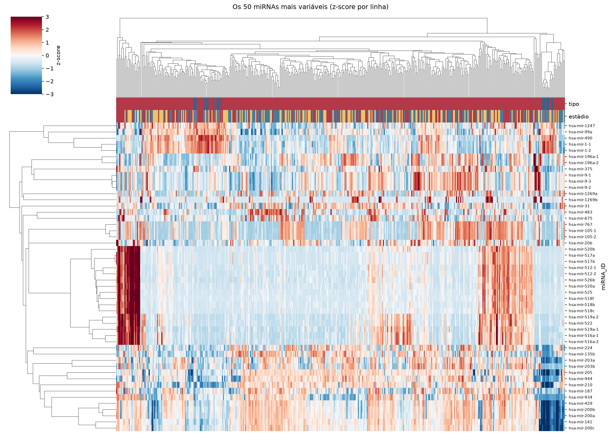
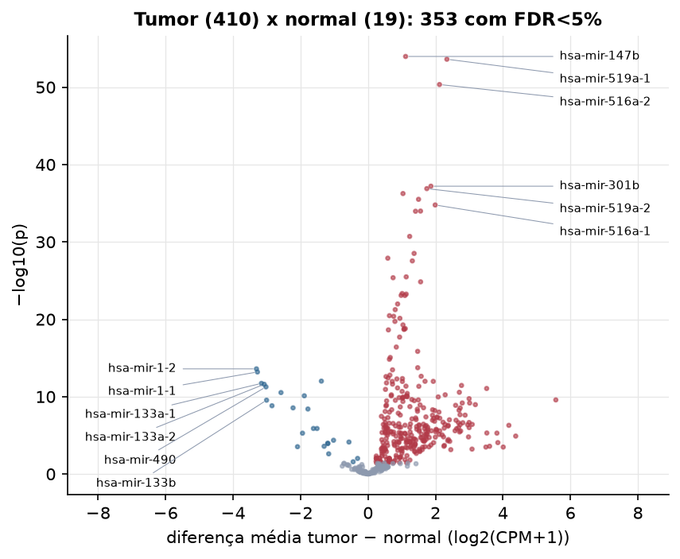

BLCA · miRNA-seq: contagens brutas (GDC)
BCGSC miRNA Profiling (miRBase v21) · gerado em 21/10/2026 18:31
4,6 Mtamanho mediano
1,77dispersão mediana α
466miRNAs
410amostras tumorais
19amostras normais
0,0%valores faltantes
Fonte: API do GDC (BCGSC miRNA Profiling)
Principais resultados
- Bibliotecas de 1,0 a 20,3 milhões de leituras (mediana 4,6). 1.070 de 1.881 features têm leitura em pelo menos 10% das amostras.
- A variância cresce bem acima da média: a dispersão mediana da binomial negativa é α=1.77 (para features com média > 10). Isso descarta um modelo Poisson e indica binomial negativa (ou Poisson-lognormal) na verossimilhança.
- A fração de zeros é compatível com a binomial negativa (diferença mediana -7,8%); inflação de zeros não parece necessária.
- Em média 84,8% das leituras de cada amostra vão para as 20 features mais abundantes.
- 466 miRNAs medidos em 429 amostras (410 tumorais e 19 normais); 0,0% dos valores estão faltando.
- Os dois primeiros componentes principais explicam 21,7% e 10,4% da variância das features mais variáveis.
- Correlação mediana entre amostras: 0,92.
- Amostras com correlação muito abaixo das demais (possíveis outliers técnicos): TCGA-2F-A9KW-01, TCGA-BL-A0C8-01, TCGA-2F-A9KQ-01, TCGA-BT-A20R-11, TCGA-BT-A2LA-01, TCGA-CU-A3QU-01, TCGA-G2-A2EL-01, TCGA-GU-A42P-01, TCGA-GV-A3QF-01, TCGA-H4-A2HO-01.
- Tumor x normal: 353 miRNAs diferentes com FDR < 5% (329 maiores no tumor, 24 maiores no normal; 19 pacientes têm o par tumor-normal).
- Mais aumentados no tumor: hsa-mir-147b, hsa-mir-519a-1, hsa-mir-516a-2, hsa-mir-301b, hsa-mir-519a-2, hsa-mir-615, hsa-mir-7705, hsa-mir-516a-1.
- Mais reduzidos no tumor: hsa-mir-1-2, hsa-mir-1-1, hsa-mir-195, hsa-mir-133a-1, hsa-mir-133a-2, hsa-mir-490, hsa-mir-143, hsa-mir-139.
- Associações clínicas com p < 0,05 nos componentes principais: PC1 com estádio (p=2.1e-05); PC2 com estádio (p=4.7e-06); PC3 com estádio (p=0.016); PC2 com sexo (p=0.018); PC2 com idade (p=3.6e-05); PC3 com idade (p=0.015).
Biblioteca


Sobredispersão e zeros

Exploração em log2(CPM+1)
Features com CPM ≥ 1 em pelo menos 20% das amostras (466 features).
Distribuição dos valores


Estrutura das amostras




Tumor x normal

Features mais diferentes entre tumor e normal
| miRNA_ID | diferenca_tumor_menos_normal | t | p | fdr |
|---|---|---|---|---|
| hsa-mir-147b | 1.114 | 19.435 | 1.07e-54 | 5e-52 |
| hsa-mir-519a-1 | 2.338 | 18.011 | 2.45e-54 | 5.71e-52 |
| hsa-mir-516a-2 | 2.119 | 17.276 | 4.55e-51 | 7.07e-49 |
| hsa-mir-301b | 1.865 | 22.598 | 6.28e-38 | 7.32e-36 |
| hsa-mir-519a-2 | 1.743 | 14.516 | 1.29e-37 | 1.2e-35 |
| hsa-mir-615 | 1.037 | 15.75 | 5.62e-37 | 4.36e-35 |
| hsa-mir-7705 | 1.498 | 22.439 | 3.13e-36 | 2.09e-34 |
| hsa-mir-516a-1 | 1.991 | 14.525 | 1.69e-35 | 9.82e-34 |
| hsa-mir-522 | 1.557 | 13.758 | 1.03e-34 | 5.08e-33 |
| hsa-mir-512-2 | 1.408 | 13.471 | 1.09e-34 | 5.08e-33 |
| hsa-mir-520b | 1.234 | 12.666 | 1.95e-31 | 8.24e-30 |
| hsa-mir-520a | 1.366 | 12.21 | 3.08e-29 | 1.2e-27 |
| hsa-mir-6783 | 0.587 | 15.861 | 1.27e-28 | 4.54e-27 |
| hsa-mir-512-1 | 1.314 | 12.027 | 2.83e-28 | 9.43e-27 |
| hsa-mir-518c | 1.132 | 11.389 | 3.29e-26 | 1.02e-24 |
| hsa-mir-1283-2 | 0.743 | 11.338 | 4.26e-26 | 1.24e-24 |
| hsa-mir-526b | 1.559 | 12.107 | 1.45e-25 | 3.96e-24 |
| hsa-mir-518f | 1.012 | 10.775 | 4.71e-24 | 1.22e-22 |
| hsa-mir-518b | 1.131 | 10.958 | 5.58e-24 | 1.37e-22 |
| hsa-mir-520f | 0.981 | 10.702 | 8.16e-24 | 1.88e-22 |
| hsa-mir-525 | 1.093 | 10.722 | 8.47e-24 | 1.88e-22 |
| hsa-mir-527 | 0.877 | 10.405 | 1.06e-22 | 2.24e-21 |
| hsa-mir-518a-2 | 0.806 | 10.194 | 5.7e-22 | 1.16e-20 |
| hsa-mir-3944 | 0.634 | 12.866 | 3.42e-21 | 6.65e-20 |
| hsa-mir-1323 | 0.759 | 9.963 | 4.14e-21 | 7.72e-20 |
| hsa-mir-1910 | 0.945 | 13.968 | 7.55e-21 | 1.35e-19 |
| hsa-mir-520g | 0.798 | 9.766 | 1.89e-20 | 3.26e-19 |
| hsa-mir-1277 | 1.037 | 16.336 | 5.36e-20 | 8.93e-19 |
| hsa-mir-4724 | 1.104 | 13.924 | 1.59e-19 | 2.56e-18 |
| hsa-mir-517a | 1.07 | 9.877 | 1.74e-19 | 2.71e-18 |
Associação com variáveis clínicas
p-valores da associação dos três primeiros componentes principais (só tumores) com estádio (Kruskal-Wallis), sexo (Mann-Whitney), idade (Spearman) e sobrevida global (Cox univariado).
| estádio (Kruskal) | sexo (Mann-Whitney) | idade (Spearman) | sobrevida OS (Cox) | |
|---|---|---|---|---|
| PC1 (18,1%) | 2.13e-05 | 0.372 | 0.355 | 0.118 |
| PC2 (10,7%) | 4.68e-06 | 0.018 | 3.6e-05 | 0.001 |
| PC3 (5,5%) | 0.016 | 0.448 | 0.015 | 0.23 |